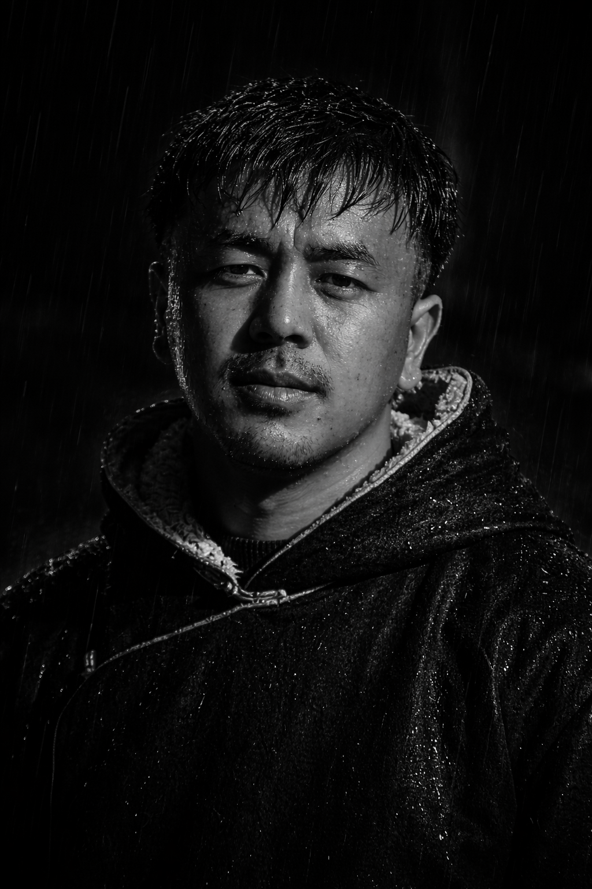

About me
I am Stanzin Sangay, a dedicated Computer Science Engineer on the path to becoming a full-stack developer. My work is fueled by a genuine curiosity and a drive to create innovative digital and multimedia experiences. By bridging my technical expertise with my passion for video editing, VFX, poster design, and music production, I tackle complex engineering challenges with a highly creative and multidisciplinary approach.
⬇ Download Résumé
Skills
Technologies and tools I work with. Adjust the levels to match your reality.
Experience & education
Describe what you do here, key responsibilities, and achievements.
Describe your role, the skills you gained, and what you built.
How you got into tech / your first big project or course.